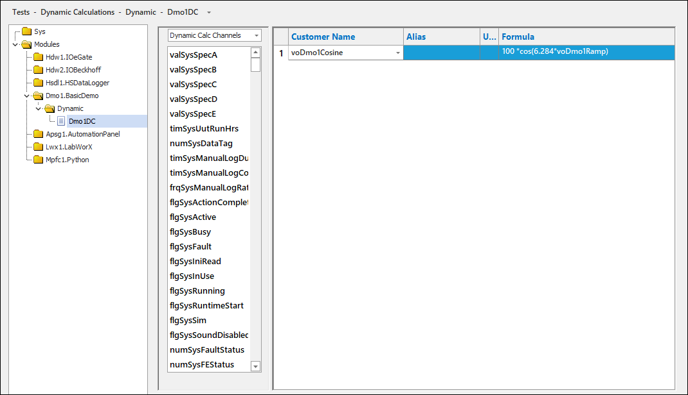
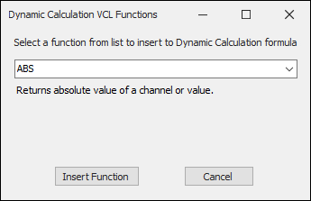

iTest User's Guide
Dynamic calculations run independently and asynchronously to the real-time system as they are processed by separate executables. This enables you to perform modifications to the calculation file while it is actively running without affecting the system or causing a full rebuild. Test Manager and SolutionBuilder support the creation of multiple dynamic calculation files, but only ten may be active at a given time. The CalcEngine application executes the dynamic calculations and processes them at system scan rate.
Dynamic calculations support the following channel types:
 |
NOTE: | The use of string channels is not supported. |
To use dynamic calculations, the CalcEngine application can be configured to initiate upon startup. To do so, edit the powertek.ini file in the $SUPPORTDIR with the following additions:
CalcEngine Configuration Settings
| Operating System | Description |
| Windows | Add \\calcengine.exe>> to the Preload= entry. |
| INtime | Add\\calcengine.rta>> to the RTxPreload= entry. |
For INtime, the name used is dependent on the system version. For more information, refer to the INtime Extensions documentation to determine which RTA file to use. For INtime >= 4.2, specify the CPU node on which to run (e.g., \\CalcEngine.rta -nNodeA>>). CalcEngine.rta may be (re)started with a mailslot to data_engine (e.g., "CalcEngine Start" or "CalcEngine Start -nNodeA").
To manage dynamic calculations in SolutionBuilder, select Tests > Dynamic Calculations from SolutionBuilder's main menu to open the Dynamic Calculations editor. The Dynamic Calculations editor contains three sections: the list of dynamic calculations, the helper bar, and the editing area.
Dynamic Calculations Editor

The following right-click options are available:
Right-Click Options
| Option | Description |
| List of Dynamic Calculations | |
|---|---|
| Add | Adds a new dynamic calculation. For more information, refer to the Creating New Dynamic Calculations section. |
| Remove | Removes the selected dynamic calculation. |
| Rename... | Launches the Rename dialog, which allows you to rename the dynamic calculation. |
| Duplicate | Duplicates the selected dynamic calculation. |
| Undo | Undoes the last action. |
| Redo | Redoes the last undone action. |
| Active | Activates the dynamic calculation. When iTest is initialized, the active dynamic calculation file is automatically compiled and executed. Inactive dynamic calculations are displayed in gray font in the list. |
| Editing Area | |
| Insert Before | Inserts a new row for the dynamic calculation before the highlighted row. |
| Add to End | Adds a new row to the end of the dynamic calculation. |
| Delete | Deletes the selected row. |
| Move Up | Moves the selected row up. |
| Move Down | Moves the selected row down. |
| Copy | Copies the cell value to the clipboard. |
| Paste | Pastes the copied value. |
| Undo | Undoes the last action. |
| Redo | Redoes the last undone action. |
| Insert Channel* | Launches the Channel Selection dialog, which allows you to select a channel for the formula. |
| Insert Function* | Launches the Dynamic Calculation VCL Functions dialog, which allows you to select a function for the formula. |
| Check Syntax* | Verifies the formula's syntax. If selected, a pop-up will appear to indicate an error or confirm the syntax has passed. |
To create a new dynamic calculation in SolutionBuilder, do the following:

Dynamic Calculation Column Descriptions
| Column | Description |
| Customer Name | The channel to use for the dynamic calculation. Channels are listed by their customer name, if applicable. |
| Alias | (Read-only) The alias used for the channel. This field is automatically populated when a channel with an alias is selected. |
| Units | (Read-only) The unit type used by the channel. This field is automatically populated from the selected channel. |
| Formula | The formula to run. For more information, refer to the Editing Formulas section. |
Formulas support the use of simple expressions, VCL functions, #if statements, and #if/#else statements. The #if statement is supported for individual calculations and uses the following syntax:
#if (condition) \ntrue_result\n#endif or #if (condition) \ntrue_result\n#else\nfalse_result\n#endif
You can use the helper bar to drag and drop dynamic calculation channels and VCL functions into the formula. Alternatively, use the Insert Channel and Insert Function right-click options to add channels and VCL functions to the formula.
When the Insert Function right-click option is selected, the Dynamic Calculation VCL Functions dialog is launched. Use the drop-down menu to select a function to insert. Upon selecting a function, a description of that function will display below the menu. For more information, refer to the VCL Math and Conversion Functions, VCL Miscellaneous Functions, and VCL String Functions documentation.
Dynamic Calculation VCL Functions Dialog
